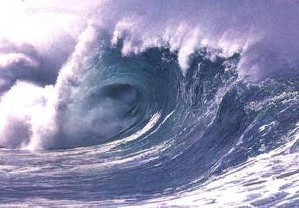

A tsunami is a series of waves in a water body caused by the displacement of a large volume of water, generally in an ocean or a large lake. Earthquakes, volcanic eruptions and other underwater explosions above or below water all have the potential to generate a tsunami.
